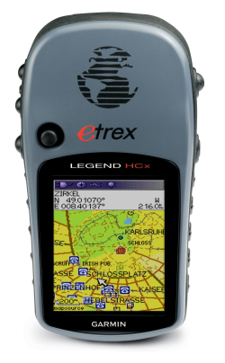

OpenStreetMap - Deutschland
GPS-Verleih
Bei Mapping-Aktionen sind immer wieder auch Leute dabei, die keine eigenen GPS-Geräte haben. Dank einiger Sponsoren können wir kostenlos moderne GPS-Geräte verleihen, damit beim nächsten Mapping-Weekend auch Anfänger eingebunden werden können.
Die Geräte
Wir haben zehn Garmin eTrex Legend HCx. Die Geräte haben einen GPS-Chip der neusten Generation, der auch in engen Straßen noch eine gute Positionsbestimmung bietet. Alle Geräte sind mit 2GB microSD-Karten ausgerüstet, auf denen die aktuellen OSM-Karten gespeichert werden können. So kann man unterwegs auf dem Farbdisplay direkt sehen, welche Daten schon erfasst wurden und wo noch etwas fehlt. Zusätzlich gibt es noch 2 GPS Tracker Holux M-241. Diese zeichnen nur den Track auf und können am Rucksack oder der Jacke befestigt werden.
Zubehör
Zu den Geräten gibt es jeweils das folgende Zubehör:
- microSD-Karte
- Auf der 2GB microSD-Karte können OpenStreetMap-Karten und natürlich die gesammelten Tracks gespeichert werden.
So geht einem nie der Speicher aus. - USB-Kabel
- Für die Verbindung zum Rechner.
- Fahrradhalterung
- Zur Montage auf dem Fahrradlenker.
- GPS Tracker
- Zum Aufzeichnen von GPS-Tracks, mit 1-zeiligem LCD-Display.
Akkus oder Batterien werden nicht mit verliehen. Die müßt Ihr selbst organisieren. Benötigt werden pro Gerät 2xMignon (AA) Akkus oder Batterien. Die Geräte brauchen nicht viel Strom, ein Akkusatz sollte etwa für einen Tag reichen.
Details zum Gerät
- Robustes und wasserdichtes Gehäuse
- 176x220 Pixel TFT-Display mit zuschaltbarer Hintergrundbeleuchtung
- Hochempfindlicher Empfänger und interne Antenne erlaubt auch Betrieb in schwierigem Gelände
- WAAS/EGNOS-fähig
- Stromversorgung über 2xMignon (AA) Batterien oder Akkus oder über USB
- Speichert auf der mitgelieferten microSD-Karte quasi unbegrenzt Trackpoints
- Speichert bis zu 500 Wegpunkte im internen Flash
- Kann OpenStreetMap-Karten anzeigen
Fotos
Die Geräte werden in einem stabilen Koffer verpackt geliefert:


Links
- Tests von Garmin-GPS-Geräten im OSM-Wiki
- OSM-Karten auf Garmin-Geräten im OSM-Wiki
- eTrex auf www.garmin.de (Informationen vom Hersteller)
Der Verleih
Die Geräte werden grundsätzlich nur für Aktionen verliehen, die OSM voranbringen. Wir haben dabei vor allem Mapping-Wochenenden, Aktionen mit Schulklassen und dergleichen im Sinn, die nur wenige Tage dauern, aber auch anderes ist möglich. Je nach Verfügbarkeit können alle zehn Geräte zusammen oder auch nur eine Teilmenge ausgeliehen werden. Die Geräte sind für Gruppenaktionen gedacht, an einzelne Leute können sie in der Regel nicht ausgeliehen werden! Wenn Du noch keine Erfahrung als OpenStreetMapper hast, dann suche Dir in der Community einen erfahrenen Mapper als Partner für die Aktion. Auf dem Kalender könnt ihr sehen, wann die Geräte schon ausgebucht sind.
Die Geräte können nur zusammen für Aktionen ausgeliehen werden, nicht als Einzelgeräte an Einzelpersonen.
Die Geräte können nicht für Aktionen ausgeliehen werden, die nichts mit OSM zu tun haben, zum Beispiel Geocaching oder Fahrradtouren!
Wenn ihr alle Infos auf diesen Webseiten gelesen und einen freien Termin gefunden habt, dann meldet Euch bei gps-verleih@openstreetmap.de für die Absprache der Details.
Ablauf
Wenn Ihr eine Aktion plant und der Termin im Kalender frei ist, dann schreibt eine E-Mail an gps-verleih@openstreetmap.de mit den folgenden Informationen:
- Für was für eine Aktion sollen die Geräte ausgeliehen werden (Name, Datum, Beschreibung, Link auf die entsprechende Wiki-Seite). Diese Informationen werden dann später im Kalender vermerkt.
- Name, Postadresse, Telefonnummer des Ausleihers.
- Wieviele Geräte braucht ihr? Welches Zubehör?
Wenn der Termin frei ist und es auch sonst keine Fragen gibt, dann werden die Geräte für diesen Termin reserviert und ein Eintrag im Kalender gemacht. Der Ausleiher bekommt von uns ein PDF-Dokument zugeschickt, dass er ausdrucken, unterschreiben und an uns zurücksenden muss. Da steht im wesentlichen drin, dass er verspricht, die Geräte pfleglich zu behandeln und sie nach Gebrauch wieder zurückzuschicken.
Der Organisator der Mapping-Aktion bekommt die Geräte dann kurz vor der Aktion zugeschickt, gibt sie während der Aktion weiter, sammelt sie hinterher wieder ein und schickt sie als versichertes Postpaket zurück.
Bericht
Wir würden uns sehr darüber freuen, wenn es nach der Aktion einen Bericht im Wiki gibt, auf den wir dann verlinken können. Wenn einige solche Berichte zusammenkommen, sieht jeder, dass das Engagement wirklich etwas bringt, und es fällt uns künftig leichter, Sponsoren zu gewinnen.
Bedingungen
- Die Geräte werden nur für Gruppen-Aktionen aus dem OSM-Umfeld verliehen.
- Entleiher muss eine Person mit Adresse in Deutschland sein.
Fragen und Antworten
Was kostet die Ausleihe?
Die Ausleihe kostet nichts. Allerdings mußt Du die Geräte auf eigene Kosten als versichertes Paket zurücksenden. Das kostet 9,40 EUR (z.B. DHL-Paket bis 10kg, Online-Frankierung, Versicherung bis 2500 Euro).
Wer kann alles die GPS-Geräte ausleihen?
Jeder, der eine OpenStreetMap-Aktion in Deutschland durchführt. Mit Aktion ist dabei gemeint, dass eine Gruppe in einer konzertierten Aktion zusammen etwas unternimmt. Du solltest aber schon Erfahrung mit der Datensammlung für OpenStreetMap haben (siehe auch nächste Frage).
Ist auf dem Gerät schon eine OSM-Karte installiert?
Auf den Speicherkarten kann auf Wunsch und bei rechtzeitiger Ankündigung eine OSM-Karte aufgespielt werden. In der Regel müssen die Karten jedoch selbst bespielt werden. Eine Anleitung liegt den Geräten bei.
Ich habe noch keine Erfahrung mit OpenStreetMap. Kann ich trotzdem mitmachen?
Viele Leute denken, man müßte nur einfach mit einem GPS-Gerät draußen rumfahren und daraus entstehen dann magisch die OpenStreetMap-Karten. Es ist aber ein ganzes Stück komplizierter und aufwändiger. Wenn Du noch keine Erfahrungen mit OSM hast, dann solltest Du Dir diese Erfahrung entweder erst selbst aneignen oder über die Community einen erfahrenen OpenStreetMapper finden, der mit Dir zusammen die Aktion durchführt. Wenn man selbst noch keine Ahnung hat, wird es einem schwerfallen, andere bei der Aktion anzuleiten und auch wirklich etwas beizutragen.
Kann ich auch ein einzelnes Gerät ausleihen?
Normalerweise nicht. Die Geräte sind für Gruppenaktionen gedacht.
Wie lange kann ich die Geräte ausleihen?
Üblicherweise nur für ein paar Tage, zum Beispiel über ein Wochenende. Wenn es zu einer Zeit keine anderen Interessenten gibt, eventuell auch mal länger. Im Zweifel einfach mal anfragen.
An wen kann ich mich mit Fragen wenden?
Die Sponsoren
Wir danken unseren Sponsoren, ohne die eine solche Aktion nicht möglich wäre:


{kind=link}
Die Geräte wurden von der Firma B1 Systems und dem Linuxhotel bezahlt. Der FOSSGIS e.V. organisiert und mapwebbing bezahlt den Versand.